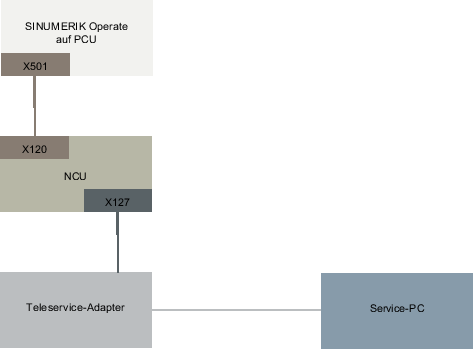
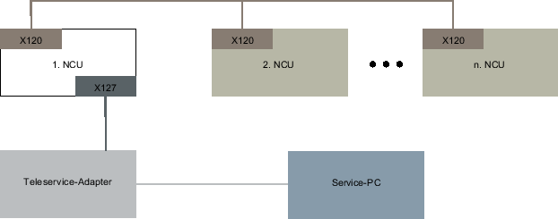
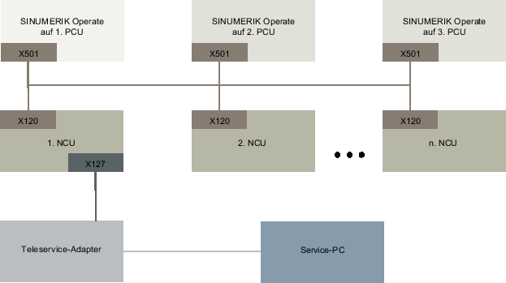

Für die Ferndiagnose über Modem mithilfe eines Teleservice-Adapters IE (TS-Adapter), der an X127 angeschlossen wird, müssen folgende Einstellungen getroffen sein.
IP-Adresse des Adapters: 192.168.215.30, Subnetmaske 255.255.255.224
IP-Adresse des Anrufers: 192.168.215.29
Diese beiden Adressen sind auch in der Datei "tcu.ini" als Standard hinterlegt. Wenn andere Adressen verwendet werden, ändern Sie in der Datei "tcu.ini" die Einträge "X127ModemIP" und "X127RemoteAccessIP" entsprechend.
Die Ports der Dienste für S7-Kommunikation, http, HTTPS, SSH sowie VNC (Port 5900) in der Firewall freischalten.
Einfache Anlage mit SINUMERIK Operate auf NCU (und Bedienstation mit TCU)
Mit den vorgenannten Einstellungen und den Vorbelegungswerten ist in dieser Konfiguration die Ferndiagnose über TS-Adapter ohne weitere Eingriffe möglich.
Einfache Anlage mit SINUMERIK Operate auf PCU
Mit den vorgenannten Einstellungen und den Vorbelegungswerten ist in dieser Konfiguration die Ferndiagnose über TS-Adapter ohne weitere Eingriffe möglich. Bei Betreiben eines SINUMERIK Operate auf PCU muss der SINUMERIK Operate in der NCU abgeschaltet sein.
Anlage mit mehreren NCUs und einem festen Modem
Nur die NCU, an welcher der TS-Adapter an der X127-Schnittstelle angeschlossen ist, muss die Option "Access MyMachine /P2P" gesetzt haben. Nur am SINUMERIK Operate in dieser NCU kann über Bedienung der Modem-Zugriff erlaubt werden und die Funktion "Fernbedienung anfordern" ausgeführt werden. Ist der Modem-Zugriff erlaubt, so hat der Service-PC implizit Zugriff auf alle anderen NCUs und deren Bedien-Software. Die Bedienbilder zur Steuerung des Fernzugriffs können hingegen auf jeder Station (SINUMERIK Operate in der NCU) individuell für die Station im Zusammenspiel mit der jeweiligen lokalen PLC bedient und eingestellt werden
Anlage mit mehreren NCUs, mehreren PCUs und einem festen Modem
Nur die NCU, an welcher der TS-Adapter an der X127-Schnittstelle angeschlossen ist, muss die Option "Access MyMachine /P2P" gesetzt haben. Nur am SINUMERIK Operate auf PCU, welches dieser NCU zugeordnet ist, kann über Bedienung der Modem-Zugriff erlaubt werden sowie die Funktion "Fernbedienung anfordern" ausgeführt werden. Ist der Modem-Zugriff erlaubt, so hat der Service-PC über das Anlagennetz implizit Zugriff auf alle anderen NCUs und PCUs und deren Bedien-Software. Die Bedienbilder zur Steuerung des Fernzugriffs können auf jeder Station (SINUMERIK Operate in der NCU) individuell für die Station im Zusammenspiel mit der jeweiligen lokalen PLC bedient und eingestellt werden.